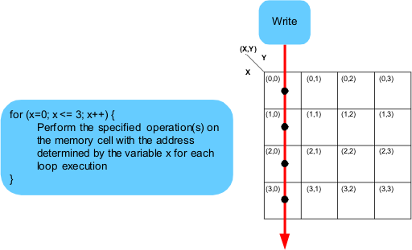

Define the address stepping sequence
The memory test language is based on the use of for loops to describe the stepping sequence of the memory test pattern. In the body of the for loop, the operation or operations to be performed on each step of the memory test pattern are defined. The loop variable can be used to determine the address of the memory cell visited. The figure below shows that the address is determined by the variable x. This will create a memory test pattern that steps from x = 0 to x = 3. This is analogous to loading an address register in a hardware APG and incrementing it. The operations defined in the body of the loop are performed on the memory cell addressed on each step of the loop (see following figure).
